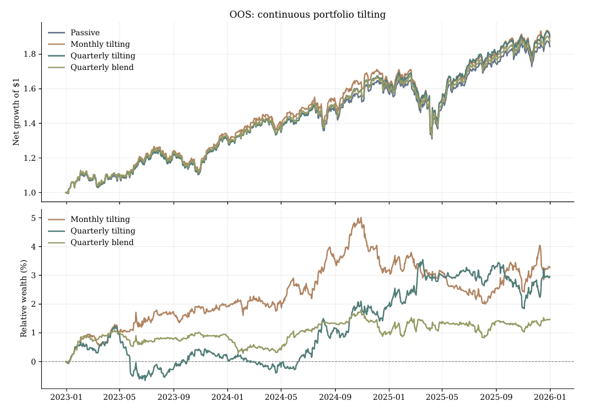
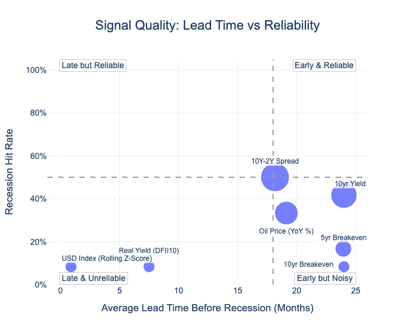
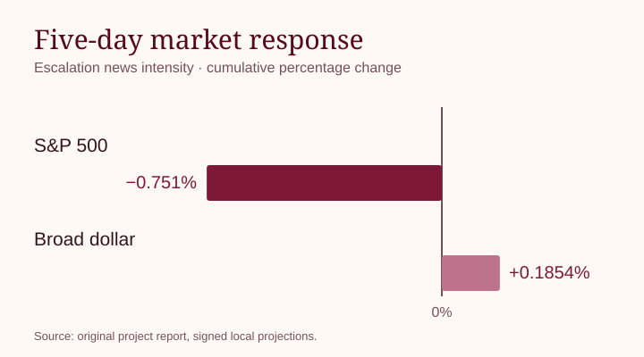

About me & experience
I'm a financial engineering graduate student at NYU Tandon with a background in computer science and quantitative finance.
My interests span investment research, risk analytics and data science. I am drawn to problems where careful modeling, empirical validation and engineering make ideas useful in practice.
- Summer 2026
Affinius Capital
Data Science InternApplied machine learning and alternative data to real estate. Analyzed 1.7M Google reviews across approximately 10,000 properties, developed multifamily performance indicators and worked on industrial rent modeling.
- Expected May 2027
New York University
M.S. in Financial Engineering · Tandon School of EngineeringGraduate study in quantitative financial methods, machine learning, financial economics and statistical arbitrage.
- July 2023 – June 2025
BlackRock
Quantitative Analyst · Retirement SolutionsImproved annuity pricing, fixed-income risk analytics and retirement modeling. Rewrote the historical pricing workflow to reduce runtime from approximately 24 hours to 20 minutes and refined risk metrics for Lifetime Income Units.
- January – June 2023
BlackRock
Intern · Defined Benefit Pensions & OCIO SolutionsBuilt a Python tool to analyze Department of Labor pension filings, supported portfolio optimization against benchmarks and contributed to investment proposals for institutional clients.
- Graduated July 2023
Vellore Institute of Technology
B.Tech. in Computer Science and EngineeringSpecialization in bioinformatics, with a foundation in programming, mathematics, statistics and machine learning.
Academic projects

Detecting market manipulation in limit order books
Unsupervised anomaly detection with engineered microstructure features and a rank-based ensemble.
Read project
Vine copulas for statistical arbitrage
Conditional dependence, relative-value trading and portfolio allocations across sector ETFs.
Read project
Consumer sentiment, the economy and media coverage
Testing whether media measures add predictive information beyond economic conditions.
Read project
Economic regimes analysis
Applying established visualization principles to refine an interactive macroeconomic dashboard.
Read project
Midterm election sentiment and market expectations
Discovering policy themes and testing their relationship with prediction markets and equities.
Read project
Effects of war risk on financial markets
Measuring conflict news intensity and examining cross-asset market responses.
Read projectContact me
I'm interested in opportunities and conversations around quantitative finance, financial data science, investment research and applied machine learning.